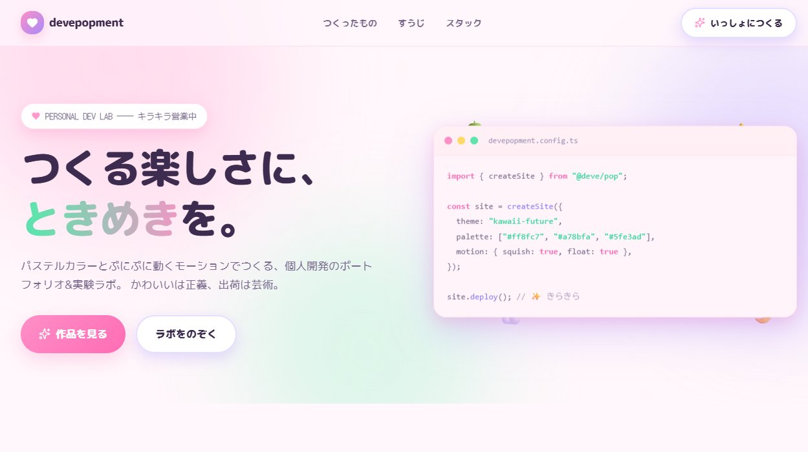
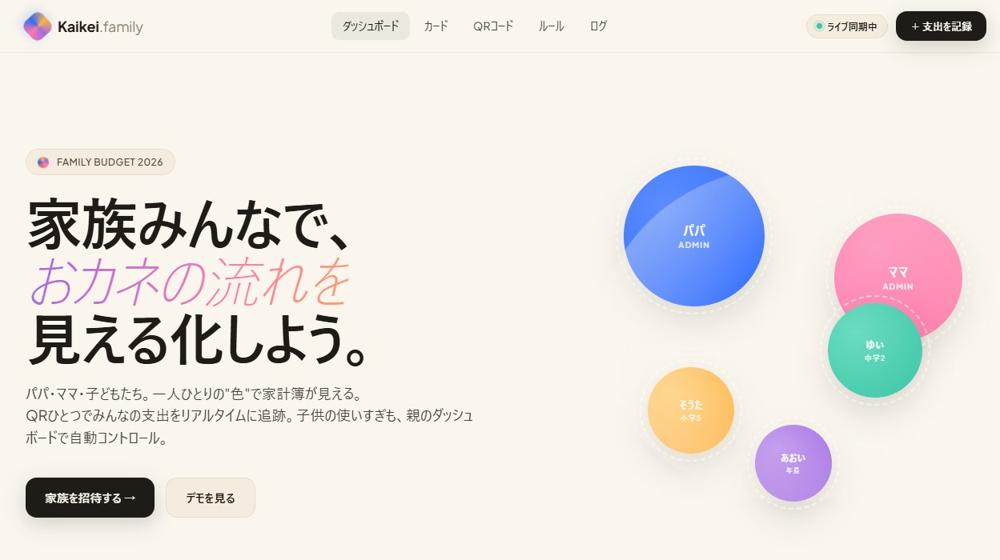
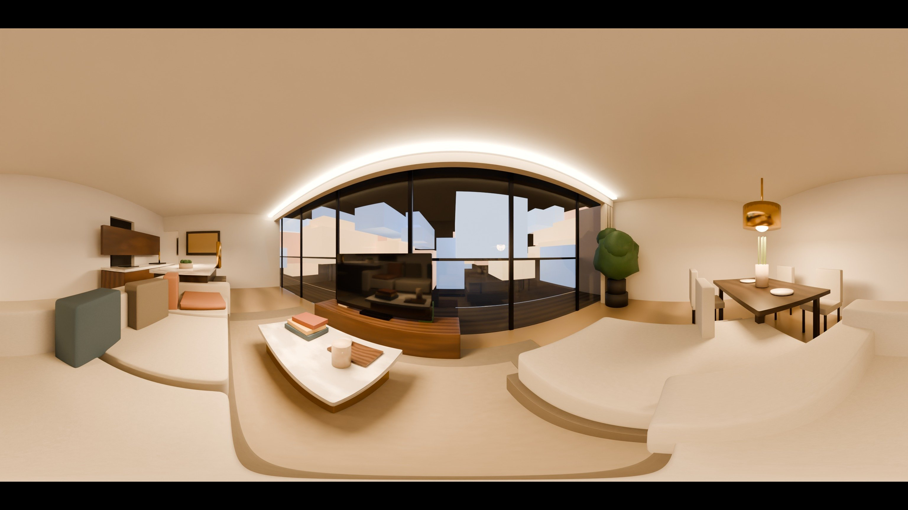
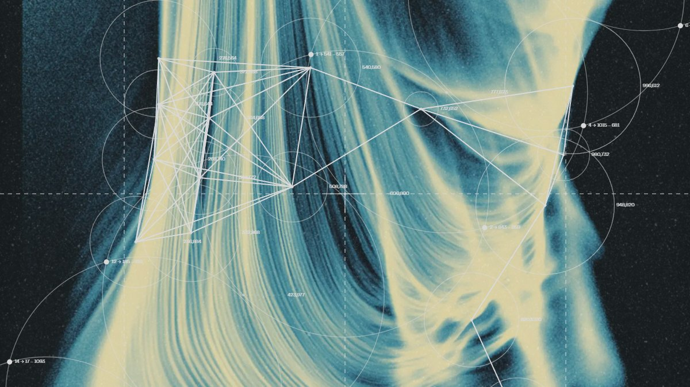
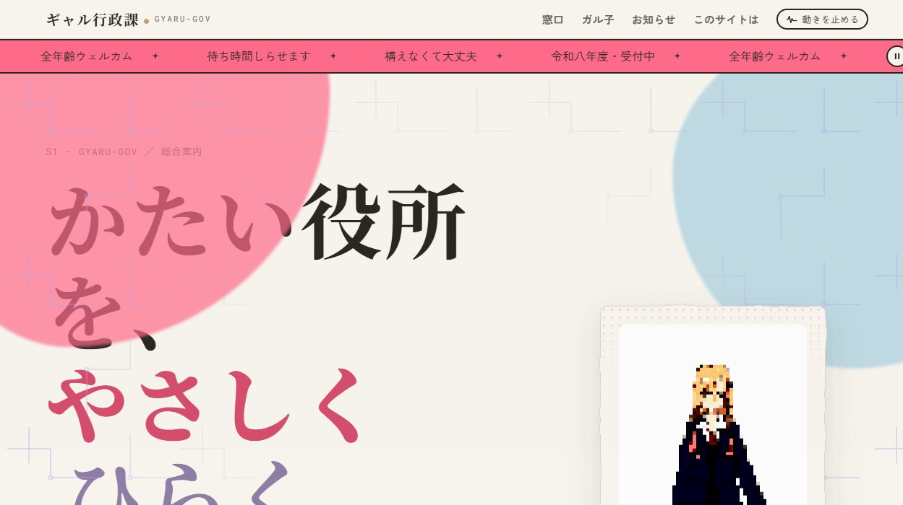
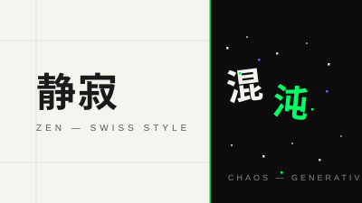

つくる楽しさに、ときめきを。

家族みんなで、おカネの流れを。

空に、住まう。3D没入型ハイエンド分譲サイト。

名前のないデザインの博物館。

かたい役所を、やさしくひらく。

デザインとは、シンプルで、カオスだ。
設計から実装まで、言語・形を問わずニーズに沿った世界をお届けします。
あなたの課題とビジョンを深く理解するところから始めます。
ワイヤーフレームからビジュアルまで、世界観を形に落とし込みます。
React、Vite、または最適なスタックで、高品質なコードを届けます。
デプロイから運用サポートまで、最後まで伴走します。